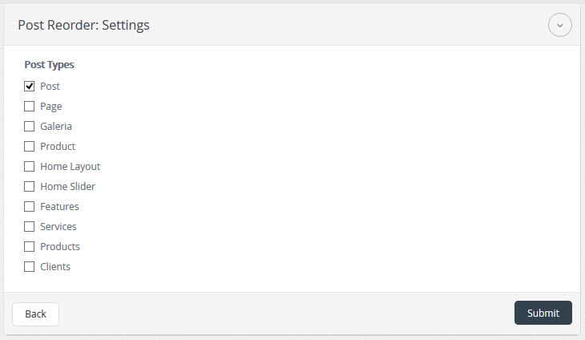
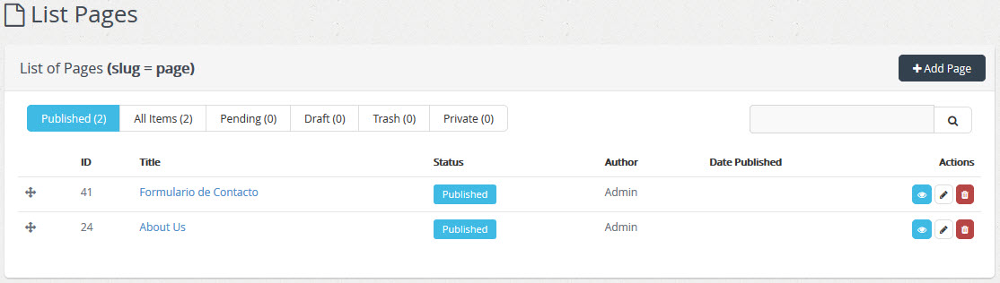

| Description |
|---|
| Post Reorder Plugin rearranges the elements of the list of any content, when elements of the list are shown on the same position in the list is rearranged frontend. |
| Configuration | |
|---|---|
 |
After activating the plugin, select the link "Settings/Configuración" to edit the characteristics of the plugin |
|  |
Select any of the post_types, to rearrange the elements post_type which are in Content , then proceed to click on the button "Submit / Enviar ' to save the changes. If you do not want to make any changes press on the button "Back / Atras" to return to the list of plugins. |
|  | To use the plugin Post Reorder open the content type selected earlier in the list of contents shown in the first column reorder icon by moving this icon on the element of this list is rearranged to the position you want. |